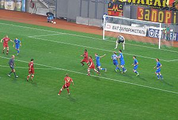

Футбол
Футбо́л асоціації, скорочено просто футбол (від англ. football, association football), інші назви: ко́паний м'яч або ко́панка, сокер (англ. soccer) — один з різновидів футболу, олімпійський вид спорту, командна спортивна гра, у якій беруть участь дві команди по одинадцять гравців у кожній.
Футбол є одним із найпопулярніших видів спорту у світі. У футбол грають м'ячем на прямокутному трав'яному полі (іноді траву замінюють штучним покриттям) з воротами на двох протилежних сторонах поля. Метою гри є забити якомога більше голів; тобто, завести м'яч у ворота супротивника якомога більше разів. Головною особливістю футболу є те, що гравці (за винятком воротарів) не можуть в межах ігрового поля торкатися м'яча руками. Переможцем гри є команда, що забила за час матчу (два тайми по 45 хвилин) більше голів, ніж супротивник.
Найпрестижнішим турніром з футболу є Чемпіонат світу з футболу.